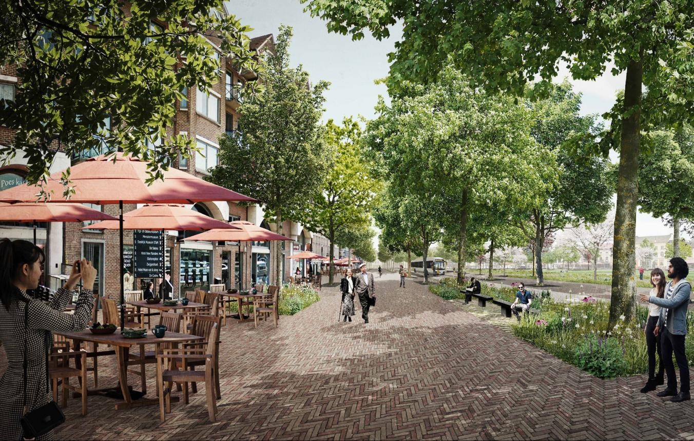

Vragenlijst
Home
Informatie
logIn
Heb je ooit angstige of paniekachtige gevoelens ervaren bij het betreden van open ruimtes, zoals pleinen, parken of grote winkelcentra?
Altijd
Soms
Nooit
Voel je je ongemakkelijk of angstig bij het verlaten van je huis of een vertrouwde omgeving?
Ja
Nee
Soms
Zijn er bepaalde situaties of omstandigheden in open ruimtes die je vermijdt vanwege angstgevoelens?
Ja, heel vaak
Nee, nooit
Soms
Ervaar je fysieke symptomen zoals hartkloppingen, zweten of ademhalingsproblemen wanneer je je in een open ruimte bevindt?
Ja, ik herken alle symptonen
Ik herken maar een paar symptonen
Nee, ik herken geen symptonen
Maakt het een verschil of je alleen bent of vergezeld wordt door anderen in open ruimtes?
Ja
Nee
Heb je herinneringen aan traumatische gebeurtenissen in open ruimtes die je angst kunnen vergroten?
Jawel
Nee
Jawel, maar de herinneringen zijn vaag